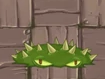

Basic Zombie

Basic Zombie hates the term "Basic". He doesn't consider himself some generic foe or common corpse. He's an individual, darn it, and he's going to make a difference even if it kills you.
Conehead Zombie

His traffic cone headpiece makes him twice as tough as normal zombies. After a wild night, Conehead Zombie woke up holding a mysterious receipt for a cone and industrial strength adhesive.
Buckethead Zombie

His bucket hat makes him extremely resistant to damage. There was a time when Buckethead Zombie was hailed as a zombie genius for his innovative bucket-on-head strategy. It's been a few years, though, and zombies wonder if he's got any surprises left. His secret? He doesn't.
Flag Zombie

His flag marks the arrival of a huge pile or "wave" of zombies. A spelling impaired zombie named "Brian," Flag Zombie keeps thinking the rest of the zombies are talking to him. At least he feels important.
Snorkel Zombie

Snorkel zombies can swim underwater. Special: submerges to avoid attacks. Snorkel Zombie has a hard time getting the Bikini Zombies. He's tried offering them flowers, jewelry, and even chocolate-covered brains. But nothing seems to work. They just can't seem to see past the snorkel on his face.
Newspaper Zombie

Newspaper protects zombie, who is then enraged when it is destroyed. Special: becomes a flighty zombie once the newspaper is destroyed You can't really blame him for getting so upset; he was THIS close to finishing the crossword (23 down was "Brains").
Mummy Zombie
Regular mummified zombie. Is he a mummy? Is he a zombie? It turns out he's a zombie who's rolled himself in toilet paper to protect his fair skin. True fact!
Conehead Mummy
His cobra cone headdress makes him twice as tough as normal mummies. Conehead Mummy Zombie prefers the circular cone shape over the typical pyramid shape. It's a fashion thing, and Conehead Mummy Zombie always stays ahead of fashion.
Buckethead Mummy
His sandy bucket greatly protects him from damage. Buckethead Mummy Zombie graduated Magna Zom Louder from Zombie Academy where he learned to utilize his diaphragm during groaning lessons.
Flag Mummy Zombie
Marks the arrival of a huge sandy "wave" of zombies. Egyptian Flag Zombie is so far behind he thinks he's in first place. He's clearly living in de-Nile.
Ra Zombie

Tries to steal sun, just for safe keeping. Special: tries to steal sun Ra Zombie isn't actually named after the Sun God Ra, though that's a common mistake. He just likes to say "Ra" a lot.
Camel Zombies

Arrives in step with other Camel Zombies. Special: arrives in a group of three zombies or more Each Camel Zombie is an excellent ballroom dancer, practicing every day by holding up mysterious signs with strange symbols. They call it "The Camel Dance."
Tomb Raiser Zombie
Carries a torch that can instantly destroy your plants. Throws out bones to create tombstones. Special: creates tombstones on the lawn He dreams about playing fetch, running for brains. He loves burying himself in the yard, and is not yet indoor trained. He's still looking for his tail.
Pharaoh Zombie
His sarcophagus greatly protects him but slows down a rather fast zombie. Speed Details: moves like a hungry zombie once free The second cousin once removed of King Rot, he rose to power with his disappearing sarcophagus act, but met his untimely end in an unfortunate goat accident. His tale is told in great detail on the back of his sarcophagus, which no one will ever see.
Imp Mummy
Thrown over most of your defenses, then slinks onward. Imp Mummy prefers to laze around the tomb, hop up on the urns, and stratch at the sarcophagi. The sound of him coughing up a hairball is one you will never forget.
Mummified Gargantuar
Massive zombie from a royal line of mummies. Damage: crushes plants with sarcophagus Special: launches Imp Mummy when damaged True Fact #1: The pyramids were built in an attempt to make Mummified Gargantuar seem small. It didn't work. True Fact #2: The Sphinx isn't missing its nose... that is the face of... Gargantuar.
Torchlight Zombie
Carries a torch that instantly destroys plants and scorches the earth. Torchlight Zombie has no fear of the dark. That's not because he's always got a torch, however, but rather because as a zombie he has no capacity for fear in the first place.
Pyramid-head Zombie
His pyramid-shaped headgear provides triangular noggin protection. Pyramid-Head Zombie isn't aware that his pyramid is pyramid-shaped. He's a little slow in that respect.
Egypt Rally Zombie
He celebrates with increased vigor and truculence the arrival of a new wave of bandaged baddies. Sometimes, a regular Flag Mummy Zombie simply isn't enough to inspire the desired amount of terror and disgust. In these instances, upgrading to the Egypt Rally Zombie isn't the sensible choice, it's the only choice.
Zombot Sphinx-inator
The destroyer of plants from the ancient sands. Special: missile attack can create tombstones To add that extra bit of wickedness to the Sphinx-inator Dr. Zomboss chiseled his creation from the stonework of cursed tombs. You should not take this instance of reuse and recycle to mean he's going green. The only thing green about him is his tongue.
Sunflower

Sunflowers are essential for you to produce extra sun. Try planting as many as you can! Sun Production: normal. After the release of her first major Youtuber video "Zombies On Your Lawn," Sunflower's Youtuber channel has been bursting with fun. She is currently putting the final touches on her reality show TV pitch "Sunflower Thinks She Can Dance."
Twin Sunflower
Twin Sunflowers give twice as much sun as a normal sunflower. Sun Production: double Twin Sunflower's super-chic line of ultra-expensive sunglasses has been a huge hit wherever she goes. Due to this she has been unable to travel without being swarmed by the Poppyrazzi.
Wall-nut

Wall-nuts have hard shells which you can use to protect your other plants. Having retired from his days as a champion bowler in the Pro Leagues, Wall-nut is looking forward to a real challenge on the front lines of home defense. DEFENSE! DEFENSE!
Peashooter
Peashooters are your first line of defense. They shoot peas at attacking zombies. "What is it like being famous?" asked the Peashooter while sipping his bottled water, "I can't talk right now, I'm finishing my merchandising deal. Hold my fir coat."
Potato Mine
Potato Mines explode on contact, but they take time to arm. Plant them ahead of zombies. Usage: single use, delayed activation. Range: contact. Believe it or not, SPUDOW! did not happen overnight. Having been forced to try out new catchphrases and focus testing as many variations as possible (Tubular? Really?), Potato Mine weeded out the competition to stick with what he knows best.
Bonk Choy

Bonk Choys rapidly punch nearby enemies that are ahead or behind them. Special: can attack ahead or behind. A freelance dentist on the side, he's offering a special this month - he'll knock two of your teeth out for the price of one!
Cabbage-pult
Cabbage-pults hurl cabbages at the enemy. Cabbage-pult received his doctorate in pulting from Harvest University. He knows a thing or two about launching his way to the top. He also makes a mean soup.
Kernel-pult
Kernel-pult flings corn kernels and butter at zombies. Damage Details: light (kernel), normal (butter) Special: butter immobilizes zombies While working as an usher at the local movieplex, he saw "Fried Green Tomatoes" and found his higher calling. He packed up his husks, his kernels, his butter, and enlisted.
Grave Buster
Grave Busters consume graves they're planted on. Usage: single use, must be planted on graves Special: removes graves He may appear spiky or ill-tempered, but Grave Buster just wants to give you a big hug. Unless you're a puppy. He's terrified of those.
Repeater
Repeaters fire two peas at one time. Damage Details: normal (for each pea) Firing Speed: 2x "Everyone always asks me if we've met before." says Repeater. "Everyone always asks me if we've met before. Wait, did I just say that?"
Spikeweed
Spikeweeds destroy one rolling zombie and hurt any zombies that step on them. Special: can't be eaten by zombies Weakness: crushed by rolling zombies Although Spikeweed grew up on the seedy side of town, his acupuncture business has been blooming.
Cherry Bomb
Cherry Bombs can blow up all zombies in an area. They have a short fuse so plant them near zombies. Usage: single use, instant. The Cherry Bomb Brothers attempted to start their own band. "We tried to figure out what the sound would be, but we kept explodonating speakers, stages, fans, and of course, zombies. Look for our LP next year."
Bloomerang

Bloomerangs can hit up to three targets in their lane, twice each coming and going! Special: can hit up to 3 targets, with two hits each. As the first new member to your home defense team, Bloomerang enjoys long walkabouts with his friend, Koala Bear, and listening to his Bob Barley albums out back.